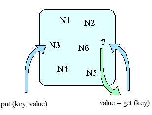
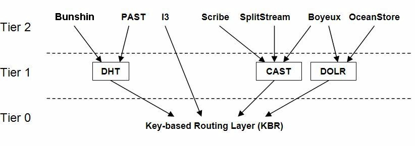
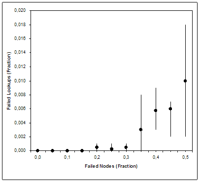

|
|
The DHT abstraction provides the
same functionality as a traditional hash table, by storing the
mapping between a key and a value. This interface implements a
simple store an retrieve functionality, where the value is always
stored at the live overlay nodes/s to which the key is mapped by the
KBR layer. Values can be objects of any type.
A
distributed hash table (DHT) provides two operations : put(key,value)
and value = get(key). The Bunshin implementation of put routes a
PutMessage containing value to key's root. It upon receiving the
message, stores the (key,value) pair in its local storage. The get
operation routes a GetMessage, the key's root returns the value and its
using the client node handle in a single hop.

Use
replication to ensure that stored data survives node failure. To
replicate a newly received key few times, the applications call
replicaSet(k,r) and sends a copy of the key to each returned node.
Caching, applications like DHTs use dynamic caching to create transient
copies of frequently requested data in order to balance query load.
Bunshin is built on top of
a decentralized key-based routing (KBR) P2P overlay network. It benefits
from the underlying services provided by the Common API layer like Past
and CFS. A diagram can be seen just below.

We had previously used other solutions like Past, but
they did not provide us with enough guarantees with the problem of key
movement, when nodes join or leave the network. Sometimes, keys were not
found or simply returned a null value. In Bunshin, we have solved this
problem by using an active replication scheme.
Bunshin provides the
standard put() and get() methods of a DHT, replicating data into
REPLICA_FACTOR replicas. Possible node replicas are obtained via the
Common API method replicaSet(). It is also notified of node joins /
leaves by the update() method. However, to avoid event losses and
consequently, update() misses, each node periodically checks the
following:
- Checks if all keys currently stored by my node already belong
to me. If not, affected key/value pairs are inserted into the
newly corresponding node.
- Checks if all
replicas of my node’s key/value pairs are still alive, and their
number is equal to REPLICA_FACTOR. If that is not the case,
choose a new set of replicas and update accordingly.
- Check if all
replicas assigned to my node have their owner still alive. If it
is not, we may find that the new owner knows nothing about our
key. Here we can choose between different policies, but the main
idea is that nodes would notify the new owner and could follow a
versioning control and choose the newest one.
We have validated the
viability of Bunshin’s approach by simulating creation of 1000 nodes and
insertion of 1000 random key/value pairs using our own KBR simulator,
called PlanetSim and
using the Chord overlay. The objective of this test is to check
persistence and reliable properties of our replication system. Each
key/value has six replicas (including the main copy stored at the direct
successor). After the insertions, a fraction of the nodes fails without
warning and we fetch each of the keys from a random existing node. We
can see in Fig [] that the results are similar to those of CFS, which
validates our approach.

Figure : Fraction of key request
failures as a function of the fraction of 1000 nodes that fail. Each
data point is the average of 5
experiments involving 1000 keys lookups; the error bars indicate the
minimum and maximum results.
Attention : future new
versions of Bunshin will be included inside the
EasyPastry Project. We strongly
recommend to use the DHT abstraction layer that
provides.

Distribution: Source
and binary code, written in Java v1.6 and compiled
in Java v1.6. License: Bunshin is available
under a
LGPL-like license.
- March
26, 2009.
Release 3.2
-
Release Notes: New version based on FreePastry
2.1 and XStream 1.3.1.
- Download:
bunshin 3_2.zip [source + binaries]
- June
15, 2008.
Release 3.1
- Release Notes: New version based on FreePastry
2.0_4. It also includes more bug fixes.
- Download:
bunshin 3_1.zip [source + binaries]
-
May 14, 2008.
Release 3.0
-
Release Notes: Optimized and
Lightweight version. Improving the
message dispacher, xml storage, and
deleting unused functionalities like url
or mutli-field methods. Furthermore,
this version is tested on
Grid'5000 Platform.
- Download:
bunshin 3_0.zip [source + binaries]
-
March 09, 2007.
Release 2.3 R.C.
-
Release Notes: New version based on FreePastry
2.0.
- Download:
bunshin_2_3.zip [source + binaries]
-
May 10, 2006.
Release 2.2.4
-
Release Notes: New version based on FreePastry 1.4.4. New feature : XMLStorage using
XStream project. It also includes more bug fixes.
- Download:
bunshin_2_2.zip [source + binaries]
- November
15, 2005.
Release 2.1.2
- Release Notes: New features :
New version based on FreePastry 1.4.2.
This release includes major refactoring
of Bunshin core code and
more bug fixes.
- Download:
bunshin_2_1.zip [source + binaries]
-
July 14, 2005.
Release 2.0.4
-
Release Notes: New features :
New version based on FreePastry 1.4.1.
The new features are Multicontext
application, URL methods and FileMapping.
Bunshin core bugs
fixed too.
- Download:
bunshin_2_0.zip [source + binaries]
- February
24, 2005.
Release 1.3.
- Release Notes: New features :
Links & Listeners . Bunshin Search now
includes the possibility of binding the
values and query the specified incoming
and outgoing links. Another feature is a
callback which notifies the value
updates, as for example, the incoming
links.
- Download:
bunshin_1_3.zip [source + binaries]
-
January
11, 2005.
Release 1.2.
-
Release Notes: Caching is the
new feature in this version. Other
improvements in this version are new
fields in the properties files and a bug
fixed in the search engine.
- Download:
bunshin_1_2.zip [source + binaries]
- November
11, 2004.
Release 1.1.
- Release Notes: New version
with class refactoring , new object
abstraction BunshinConnection and the
new keyword search engine BunshinSearch.
- Download:
bunshin_1_1.zip [source + binaries]
-
October 25, 2004.
Release 1.0.
-
Release Notes: Initial
version, based on FreePastry 1.3.2. This release
includes new features like the
implementation of the StorageManager (MemStorage
or DiskStorage), new replica control,
and major bug fixing. It also includes the Javadoc html
documentation.
- Download:
bunshin_1_0.zip [source + binaries]
Azureus Mod
Azureus implements the BitTorrent protocol using java language and comes bundled with many invaluable features for both beginners and advanced users.
Official website :
http://azureus.sourceforge.net/
Distribution: Source
and binary code, written in Java v1.4.2 and compiled
in Java v1.5.
- November
25, 2005.
Beta 1.0
-
Release Notes: First version based on
Azureus 2.3.0.4. The initial idea is
swap the DHT original implementacion by
Bunshin. The DHTTracker and Distributed
DataBase are manly the changed
- Download:
azureus_mod_b1.zip [source + binaries
+ libraries
]
|
Rubn Mondjar Andreu,
PhD student in the Department of Computer Science and Mathematics at Universitat Rovira i Virgili in Tarragona, Catalonia, Spain. Contact <ruben.mondejar@urv.cat>
Carles Pairot Gavald, PhD
research collaborator in the Department of
Computer Science and Mathematics at Universitat Rovira i Virgili in
Tarragona, Catalonia, Spain. Contact <carles.pairot@urv.cat>
Pedro Garca Lpez, full-time professor in the Department of
Computer Science and Mathematics at Universitat Rovira i Virgili in
Tarragona, Catalonia, Spain. Contact <pedro.garcia@urv.cat>
2005
-
Rubn Mondjar,
Pedro Garca y Carles Pairot.
Bunshin: DHT para
aplicaciones distribuidas. XIII Jornadas de Concurrencia y
Sistemas Distribuidos (JCSD). I Congreso Espaol de Informtica
(CEDI 2005). Granada, Spain, September 2005.
[translation]
-
Carles Pairot, Pedro Garca,
Rubn Mondjar, and Antonio F. Gmez Skarmeta. Building Wide-Area
Collaborative Applications on top of Structured Peer-to-Peer
Overlays. Accepted for publication on Proceedings of 14th
IEEE International Workshops on Enabling Technologies:
Infrastructures for Collaborative Enterprises (WETICE-2005).
Linkoping, Sweden, June 2005.
-
Carles
Pairot, Pedro Garca, Rubn Mondjar, and Antonio F. Gmez
Skarmeta. p2pCM: A Structured Peer-to-Peer Grid Component
Model. Accepted for publication on Proceedings of the 5th
International Conference on Computational Science. 2nd
International Workshop on Active and Programmable Grid
Architectures and Components. Atlanta, USA, May 2005.
Reinout van Schouwen, www.iids.org.
Past
http://freepastry.rice.edu/PAST/
CFS
http://www.pdos.lcs.mit.edu/papers/cfs:sosp01/
|
 Description
Description